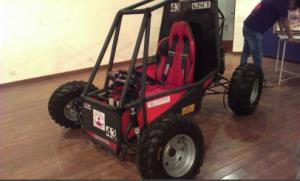

Competition
● BAJA SAE Rochester, New York 2019
● Mega ATV Championship
Achievements
● 1st Place - Drag Race, Mega ATV
Technical Highlights
● Vibration Isolation for Engine
● Self made brake calliper for inboard braking

Competition
● BAJA SAE Indore 2019
● BAJA SAE USA, Oregon 2018
Achievements
● 4th Place - India Virtuals
● 9th Place - Design at Indore
● 3rd Place – Overall ranking in India
● 8th Place – Cost Evaluation
● 6th Place – Business Plan Presentation
Technical Highlights
● Tuning of the CVT to ensure efficient working of transmission failure.
Competition
● Enduro Student India 2018.
● BAJA SAE India 2018.
Achievements
● 23rd Place – Overall amongst 90 participating teams.
● 3rd Place – Engineering Design.
● 4th Place – Business Plan Presentation.
● 17th Place – DirtX.
Technical Highlights
● Self Made Axle.
● Self Made Brake Calipers.
● Custom Made Brake Lines.

Competition
● Enduro Student India 2017.
● BAJA SAE India 2017.
● BAJA SAE USA, California 2017.
Achievements
● 11th Place – Overall ranking in India.
● 9th Place – Endurance Race.
● 3rd Place – Business Plan Presentation.
● 15th Place – Acceleration.

Competition
● Baja SAE India,Indore 2015.
Achievements
● Completed all dynamic events and endurance race.
● 7th Place – Hill Climb.
● 11th Place – Static events.
● 2nd Place – Overall Ranking in Mumbai.
Technical Highlights
● Suspension design changed to Semi trailing arm in rear.
● Weight reduction of 70kgs was achieved compared to Raudra2.
● Steering radius was further reduced to 2.16m.
● Driver effort was comparitvely less.
Competition
● Sasol Baja South Africa Challenge 2014.
Achievements
● Best Social Team Award.
● 1st Place – Business Plan Presentation.
● 4th Place – Car Design Evaluation.
● 6th Place – Design Report.
● 10th Place – Overall Ranking.
Technical Highlights
● Overall weight reduction of 38 Kgs from the previous car.
● Implementation of a differential for the 1st time.
● Cost effective and reduced weight for the self-designed gearbox assembly.
● Steering turning radius reduced from 4.00 m to 2.85 m.
● Tuning of the CVT to ensure efficient working of transmission failure.
● Serviceability ensured through proper design of assembly layout.
● Pneumatic shock absorbers for suspension.

Competition
● BAJA SAE India 2014.
Achievements
s1st time completed all Dynamic and Static events.
● 1st time qualified for final Endurance race.
● 34th Grid position for Endurance race.
● Appreciation for aesthetics of the car.
Technical Highlights
● Self designed gearbox assembly.
● Tuning of the CVT to ensure efficient working of transmission failure.
● Pneumatic shock absorbers for suspension.
● Glass fibre used for bodyworks.

Competition
● Baja SAE India 2013.

Competition
● Baja SAE Auburn 2012.
Achievements
● 24th Place – Car Design Evaluation.
● Top amongst all Asian teams.